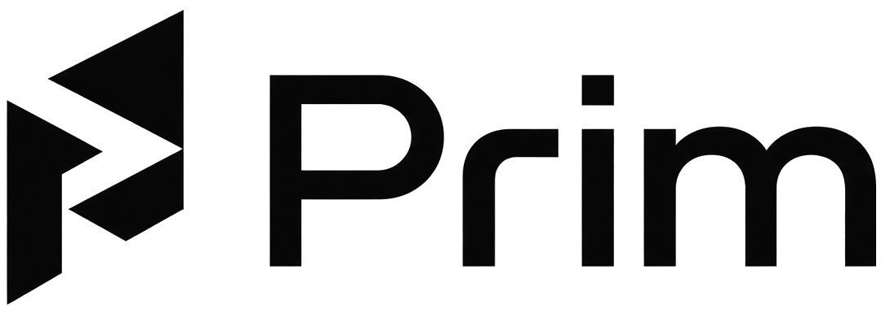
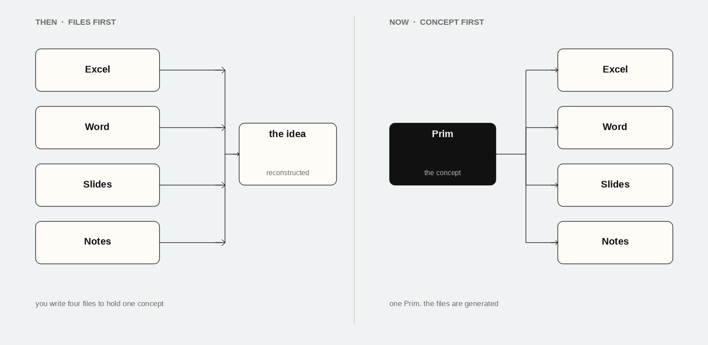
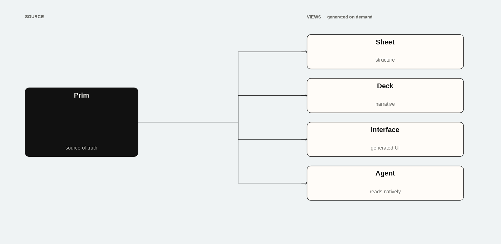
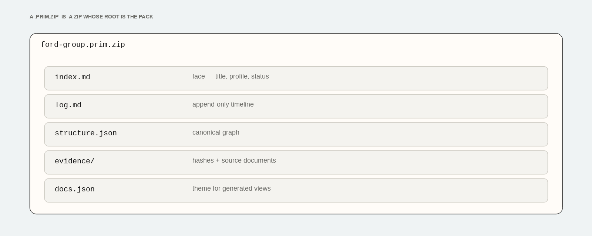
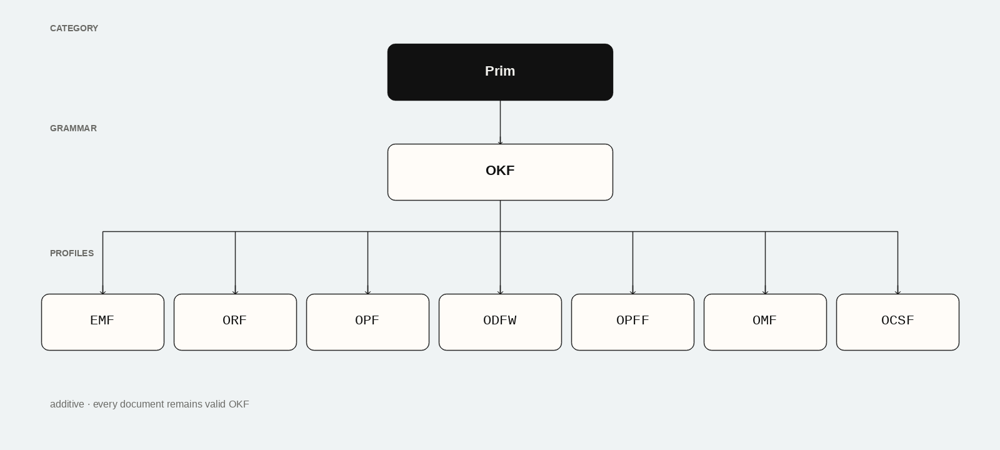

Like PDF, for AI work
Adobe cracked portable documents. A Prim is a portable package of knowledge — the same file moves between people and agents without translation.
The primitive unit of knowledge and memory for AI

This makes AI work portable — agent to agent, agent to human, and human to agent.
“Send me the prim.”
Pre-AI
Spreadsheets for structure. Documents for decisions. Decks for the story. Notes for memory. Each file was a projection we had to author by hand.
Reverse the order
The Prim is the single concept. The spreadsheet, the deck, the UI — those are generated views. Adobe cracked portable documents with PDF. This is that, for AI work.
Before
After
Agents and humans share the same file. Views are generated on demand. The deck is never the source of truth again.

Portable
Adobe cracked portable documents. A Prim is a portable package of knowledge — the same file moves between people and agents without translation.
An AI session itself is a type of Prim. What people call the model “dreaming” is the raw work. The Prim is what it packages.
Define great schemas for Prims up front and agents can finish the work. The spreadsheet is no longer the job — it is an export.
What a Prim is
Agents can read, validate, reason over, and act on them without translation layers.
Durable, versioned, supersedable knowledge that persists across sessions and agents.
Claims carry provenance, trust tiers, and hashes.
No fixed UX. Views are rendered on demand — json-render style.
Still openable and understandable by people.
A Prim is not the dream. It is what the dream becomes when it is packaged so the next agent — or person — can pick it up.

How to say it
Technical names — OKF, ORF, OCSF — belong in specs. Everyday speech stays on Prim.
Packaging

The family
Under the hood, Prims are additive Open Knowledge Format profiles from Eidos.

The category specification, family map, and packaging rules live in the open. MIT. Early.
github.com/eidos-agi/prim